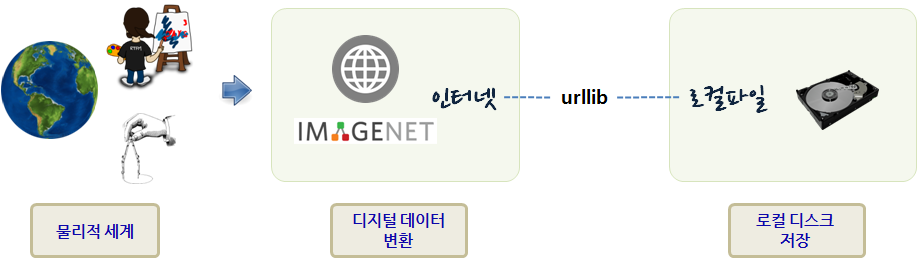

xwMOOC 고생대 프로젝트
작업 이미지 긁어오기
기계학습 모형을 개발할 때 이미지 데이터가 대량으로 필요하다. 이미지넷이 연구용으로 작업하기 좋은 데이터를 대량으로 손쉽게 구할 수 있는 통로이기도 하다. 인터넷에서 연구용으로 이미지 데이터를 준비하는 방법을 살펴보자.

1. 다운로드 대상파일 선정
이미지넷에 다양한 분류에 따라 수천장의 이미지가 있는 경우도 있다. 작성한 코드가 정상작동하는지 확인하려는 목적이기 때문에 분류체계에 따라 가장 적은 이미지를 분류집단을 찾아야 하는데, 현재 시간 기준(’16년5월26일) Misc(20400) → tea-like drink 에 23장 차관련 이미지가 있다.
http://image-net.org/api/text/imagenet.synset.geturls?wnid=n07933530
상기 url에 포함된 이미지 파일 링크는 다음과 같다.
- http://open.salon.com/files/tea_cup_small1259088246.jpg
- http://www.teageek.net/Images/TeaTasting3.jpg
- http://farm1.static.flickr.com/29/45497721_fb90fefa74.jpg
- http://mortalcore.com/wp-content/uploads/2009/06/istock_000005851440xsmall-300x199.jpg
- http://c2.api.ning.com/files/ldu*IIBKr68CKtLHAYP3DpsspxMhWj-e8PIBGotCENVGjIFVF6e1yFAvqiqZhwg1. vwjG50f9k5n9GOUVKG4xUP8x-kidLy12V/turkish_coffee.jpg
- http://www.health-outlook.com/wp-content/uploads/2009/03/tea.jpg
- http://blog.hotelclub.com/wp-content/uploads/2008/09/hot-buttered-rum.jpg
- http://ndn3.newsweek.com/media/14/080402_GreenTea_vl-vertical.jpg
- http://www.green-tea-expert.com/images/green-tea2.jpg
- http://www.agriculturalproductsindia.com/images/tea1.jpg
- http://www.teaworld.co.uk/images/teaLemon123.jpg
- http://farm3.static.flickr.com/2342/2445546884_3b08d9c25a_o.jpg
- http://farm4.static.flickr.com/3220/3105599324_0049f02d87.jpg
- http://static.squidoo.com/resize/squidoo_images/-1/lens6175262_1249329862Mugicha.jpg
- http://www.fresnodog.com/images/whitetea.jpg
- http://thefeministbreeder.typepad.com/.a/6a00e54ed890f88833011168682476970c-200wi
- http://www.theteahouse.com/topics1.jpg
- http://farm4.static.flickr.com/3249/3286589010_2cbc20d1c5_o.jpg
- http://i30.tinypic.com/117sojt.jpg
- http://farm1.static.flickr.com/1/546852_90153feb56.jpg
- http://teaguide.files.wordpress.com/2009/08/customblendimage.jpg
- http://4.bp.blogspot.com/_3DCs5bz7mdM/Sm0ck3s5r5I/AAAAAAAAB4s/KjfHq35beQ0/s320/1. Camellia+and+teacup.jpg
- http://img.tradeindia.com/fp/thumb/1/385/188.jpg
2. 파일 다운로드 파이썬 코드 작성 1
파이썬3 urllib 라이브러리를 사용해서 이미지 파일을 다운로드한다.
- 다운로드할 이미지를 품고있는 이미지넷 url을 확인한다.
- 다운로드할 이미지를 저장할 디렉토리를 생성한다 – 존재하지 않을 경우 디렉토리를
tea이름으로 새로 생성한다. urllib.request.urlretrieve메쏘드를 사용해서 인덱스 숫자를 파일명으로 확장자를.jpg로 하여 다운로드한다.
import urllib.request
import os
def save_images_from_image_net():
tea_images_link = 'http://image-net.org/api/text/imagenet.synset.geturls?wnid=n07933530'
tea_image_urls = urllib.request.urlopen(tea_images_link).read().decode()
pic_idx = 1
if not os.path.exists('tea'):
os.makedirs('tea')
for i in tea_image_urls.split('\n'):
try:
print(".......", i)
urllib.request.urlretrieve(i, "tea/"+str(pic_idx)+".jpg")
pic_idx += 1
except Exception as e:
print(str(e))
if __name__ == "__main__":
save_images_from_image_net()3. 작업결과 검토
이미지넷에 이미지 파일이 저장되어 있지만 웹서버가 수리중이거나, 이미지 파일위치가 변경되었거나, 네트워크 환경이 작업 당시 좋지 않거나 여러가지 사유로 인해 정상동작하지 않을 수 있다. 정상적으로 다운로드된 이미지 파일과 결과를 출력 로그를 통해서 확인할 수 있다. 대상 23개 이미지 중 12개만 정상 다운로드된 것을 확인할 수 있다.
....... http://open.salon.com/files/tea_cup_small1259088246.jpg
....... http://www.teageek.net/Images/TeaTasting3.jpg
....... http://farm1.static.flickr.com/29/45497721_fb90fefa74.jpg
....... http://mortalcore.com/wp-content/uploads/2009/06/istock_000005851440xsmall-300x199.jpg
<urlopen error [Errno 11001] getaddrinfo failed>
....... http://c2.api.ning.com/files/ldu*IIBKr68CKtLHAYP3DpsspxMhWj-e8PIBGotCENVGjIFVF6e1yFAvqiqZhwgvwjG50f9k5n9GOUVKG4xUP8x-kidLy12V/turkish_coffee.jpg
HTTP Error 404: Not Found
....... http://www.health-outlook.com/wp-content/uploads/2009/03/tea.jpg
<urlopen error [WinError 10060] 연결된 구성원으로부터 응답이 없어 연결하지 못했거나, 호스트로부터 응답이 없어 연결이 끊어졌습니다>
....... http://blog.hotelclub.com/wp-content/uploads/2008/09/hot-buttered-rum.jpg
HTTP Error 503: Service Unavailable
....... http://ndn3.newsweek.com/media/14/080402_GreenTea_vl-vertical.jpg
<urlopen error [Errno 11001] getaddrinfo failed>
....... http://www.green-tea-expert.com/images/green-tea2.jpg
<urlopen error [WinError 10060] 연결된 구성원으로부터 응답이 없어 연결하지 못했거나, 호스트로부터 응답이 없어 연결이 끊어졌습니다>
....... http://www.agriculturalproductsindia.com/images/tea1.jpg
....... http://www.teaworld.co.uk/images/teaLemon123.jpg
<urlopen error [WinError 10060] 연결된 구성원으로부터 응답이 없어 연결하지 못했거나, 호스트로부터 응답이 없어 연결이 끊어졌습니다>
....... http://farm3.static.flickr.com/2342/2445546884_3b08d9c25a_o.jpg
....... http://farm4.static.flickr.com/3220/3105599324_0049f02d87.jpg
....... http://static.squidoo.com/resize/squidoo_images/-1/lens6175262_1249329862Mugicha.jpg
HTTP Error 404: Not Found
....... http://www.fresnodog.com/images/whitetea.jpg
....... http://thefeministbreeder.typepad.com/.a/6a00e54ed890f88833011168682476970c-200wi
HTTP Error 404: Not Found
....... http://www.theteahouse.com/topics1.jpg
HTTP Error 404: Not Found
....... http://farm4.static.flickr.com/3249/3286589010_2cbc20d1c5_o.jpg
....... http://i30.tinypic.com/117sojt.jpg
....... http://farm1.static.flickr.com/1/546852_90153feb56.jpg
....... http://teaguide.files.wordpress.com/2009/08/customblendimage.jpg
....... http://4.bp.blogspot.com/_3DCs5bz7mdM/Sm0ck3s5r5I/AAAAAAAAB4s/KjfHq35beQ0/s320/Camellia+and+teacup.jpg
HTTP Error 404: Not Found
....... http://img.tradeindia.com/fp/thumb/1/385/188.jpg
.......
unknown url type: ''
.......
unknown url type: ''